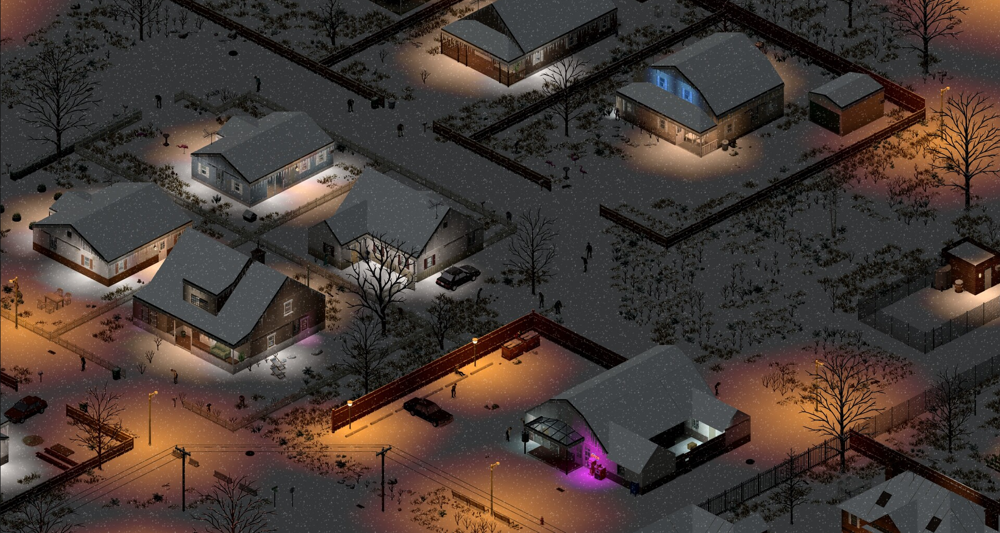
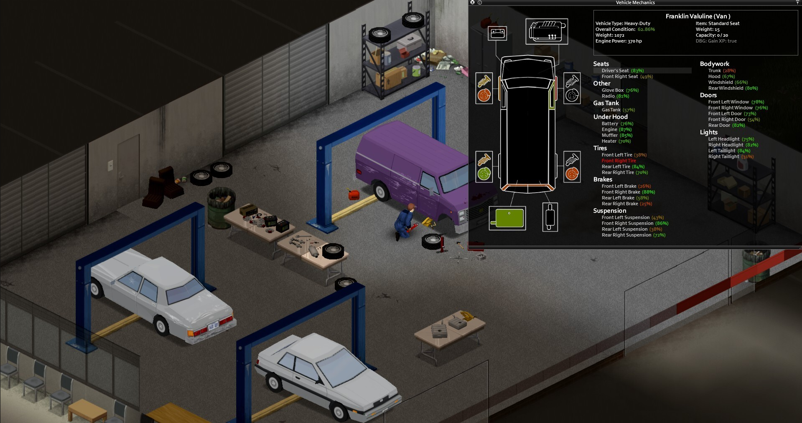
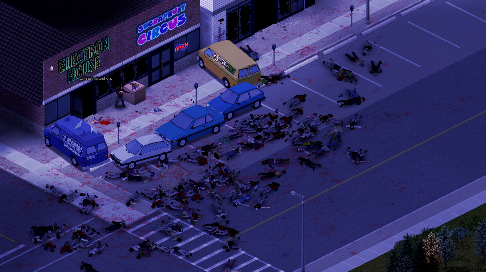

Project Zomboid



Project Zomboid — это бескомпромиссный симулятор выживания в изометрическом мире, охваченном зомби-апокалипсисом.
Здесь важна каждая мелочь: нужно искать еду, следить за здоровьем, температурой и психологическим состоянием персонажа. Выживание — это лишь вопрос времени, но каждый день можно сделать уникальной историей.
Игра предлагает глубокую систему крафта, строительства и взаимодействия с окружающим миром. Вы можете строить убежища, создавать оружие и инструменты, а также исследовать обширный мир, полный опасностей и возможностей. Можно сказать Project Zomboid - это самый реалистичный симулятор выживания в мире зомби-апокалипсиса. Почти все что есть в этой игре есть и в реальной жизни.
"Это история о вашей смерти". Неважно что ты будешь делать ты все равно умрешь может от рук зомби, может от холода или болезни. Визуал игры конечно может показаться непривлекательным и устаревшим, но разработчики и по сей день стараются улучшить её.